SSHD2382 · Category 20
Advertising
1. Scope
This category has 5 complete books, which together cover the three stages of advertising work:
| Stage | Question | Key books |
|---|---|---|
| Strategy | What are we selling, to whom, and what do we promise? | 《1001 個廣告法則》, 《智威湯遜手冊》 |
| Creative | How do we use one idea to make people remember and act? | 《美國廣告設計實用教程》 |
| Execution | How do we make it work in shops and in print? | 《POP 廣告設計》, 《廣告公司的秘密》 |
The task of advertising can be summed up in three verbs: Inform, Persuade, Inspire desire (the title of Part One of 《美國廣告設計實用教程》).
2. Core Concepts
2.1 Five Key Questions for a Campaign Strategy
Chapter 1 of 《1001 個廣告法則》 asks you to write down five answers before you start designing:
- What is your product? Not its specifications, but the problem it solves for customers.
- What is your promise? One clear, believable and distinctive benefit.
- Who is your target audience? Age, lifestyle, values, media habits.
- What is your goal? To raise awareness, change attitudes, encourage trial, or increase repeat purchases?
- What is your budget? It decides the media, the frequency and the scale of production.
2.2 Positioning
Positioning means deciding which place the brand occupies in the consumer's mind. The book lists 54 ways to position a brand. Common ones include:
| Positioning | Example |
|---|---|
| Original / first | "The first brand to..." |
| Follower / challenger | "We're number two, so we try harder" |
| Low price | Everyday low prices, value for money |
| High price / prestige | Using price to express quality and status |
| Durability, safety, quality | Building trust through product attributes |
| Emotion / lifestyle | Not talking about the product, but about who the user becomes |
2.3 AIDA: How Advertising Works
2.4 The Parts of a Print Advertisement
| Element | Role |
|---|---|
| Headline | The first words people read; carries the core idea |
| Visual | Works with the headline to create a meaning where "one plus one is more than two" |
| Body copy | Adds reasons and proof |
| Tagline / Slogan | A line the brand uses over the long term |
| Signature | Logo, product image, contact details |
| Call to action | Tells readers what to do next |
The relationship between image and text is the core semiotic question in advertising (see Week 10). The image provides the denotation (what you see), and the headline steers it towards a particular connotation (how you should understand it). In a good advertisement, the image and the text are often incomplete on their own; only together do they produce the "aha" moment.
3. Principles & Methods
3.1 The Creative Revolution
《美國廣告設計實用教程》 looks back on the "Creative Revolution" in American advertising in the 1960s. Led by Bill Bernbach's DDB, copywriters and art directors worked in pairs to develop ideas together, replacing the old process in which the copywriter finished the text and then handed it to an artist for layout. Advertising moved away from listing selling points towards winning people over with wit, honesty, humour and one "Big Idea". George Lois, Lou Dorfsman and Milton Glaser's I❤NY, all covered in the book, are examples of this approach.
3.2 Common Creative Techniques
3.3 Roles and Workflow in an Advertising Agency
flowchart LR client["Client<br/>business needs"] --> ae["Account<br/>brief, budget, timing"] ae --> plan["Planning<br/>audience insight, positioning"] plan --> cre["Creative<br/>copywriter + art director"] cre --> prod["Production<br/>photography, illustration, prepress"] prod --> media["Media<br/>scheduling, placement"] media -.evaluate results.-> client
《廣告公司的秘密》 describes "a day in an advertising agency" from a graphic designer's point of view: receive the job ticket (work order) → prepare the original artwork → finish the artwork in Photoshop and layout software → imposition → film output and proofing → prepress checks. It reminds newcomers that however good the idea is, if you do not understand halftone dots, inks, paper and spot colours, the work cannot be printed accurately (see 07 Book Design & Print).
3.4 POP Advertising (In-store Advertising)
POP (Point of Purchase advertising) is where consumers make their final decision. 《POP 廣告設計》 sums up its functions:
- Informing people about new products and offers.
- Acting as a silent salesperson.
- Prompting the final purchase: many buying decisions are only made inside the shop.
- Creating a selling atmosphere, for example with festive and seasonal themes.
- Shaping the brand image.
- Highlighting distinctive features, so the product stands out among similar products.
Forms include window displays, hanging banners, shelf talkers, floor stickers, standees, counter display stands and display boxes (which overlap with the PDQ display boxes in 06 Packaging). Current trends are systematisation (consistent with the whole campaign), integration (linking online and offline) and customer participation.
3.5 Checking Your Own Advertisement
- Can you state the idea of the ad in one sentence?
- If you remove the logo, can people still tell which brand it is?
- Seen from three metres away, are the visual and headline still clear?
- Is the promise true, and can it be kept?
- After reading, does the audience know what to do?
4. Selected Figures
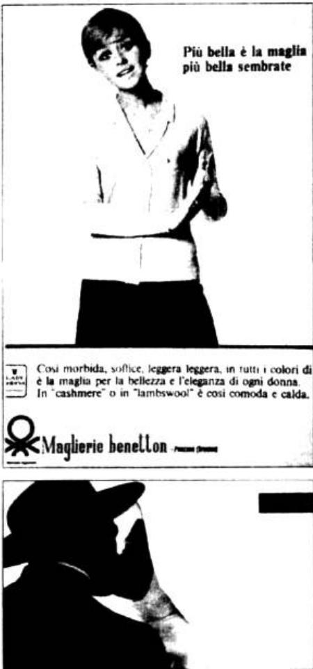
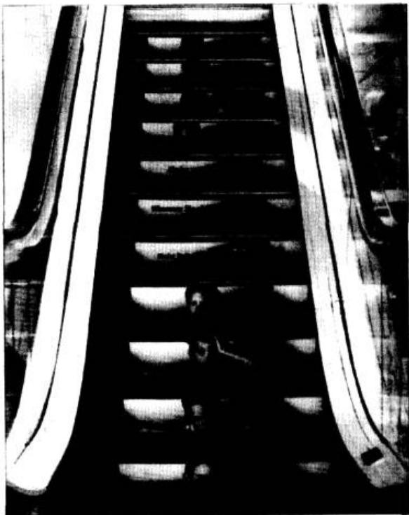
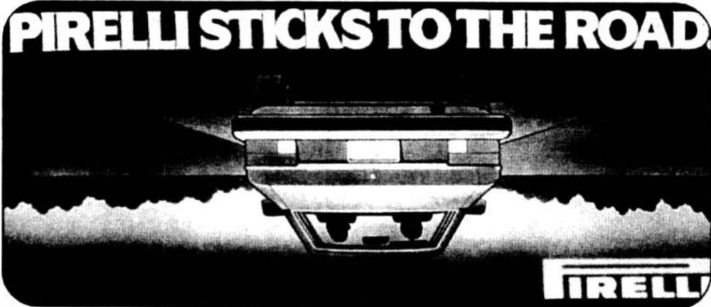
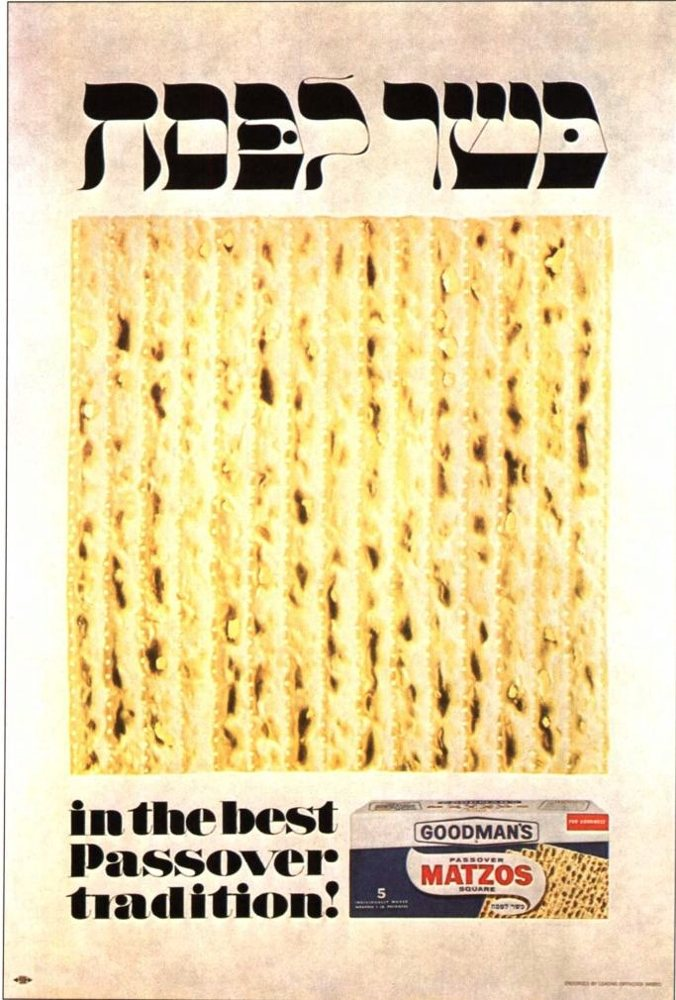
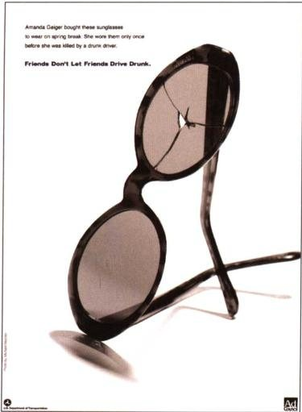
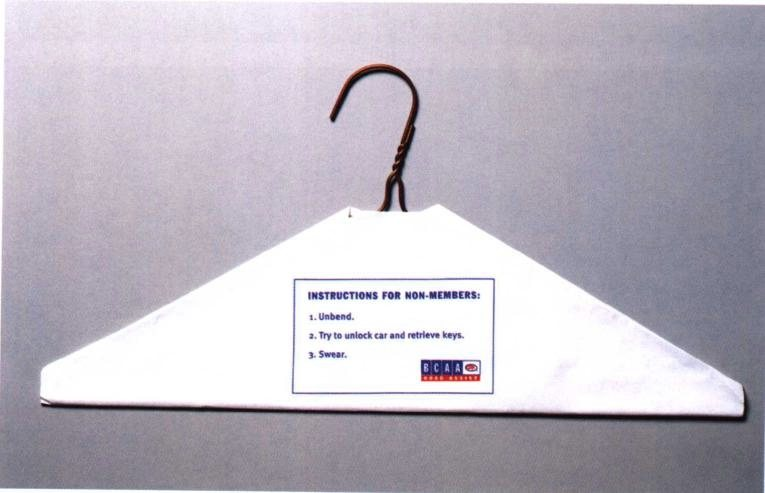
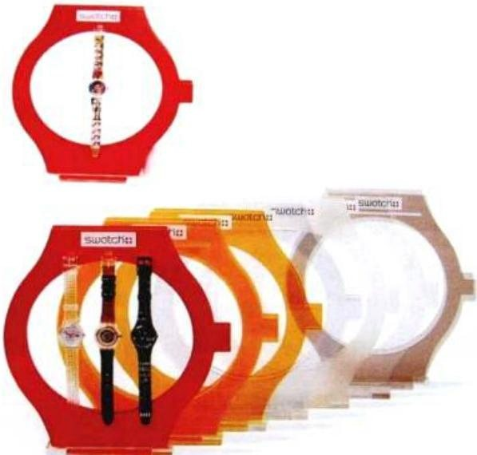
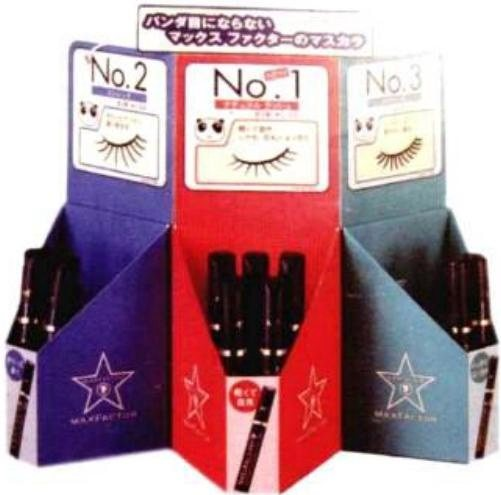
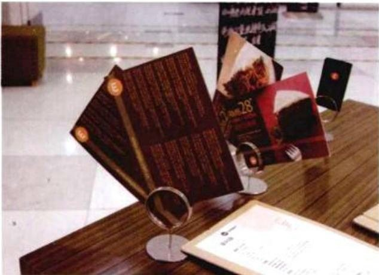
5. Source Bookshelf
Suggested reading order: 《1001 個廣告法則》, chapters 1 and 2 (strategy and positioning) → 《美國廣告設計實用教程》 (creative work and cases) → 《POP 廣告設計》 → 《廣告公司的秘密》 (practice).
6. Study Cues
- Write answers to the "five key questions" for a small local shop, then write a one-line positioning statement.
- Find an ad that made a strong impression on you and analyse its headline, visual and image–text relationship: what is the denotation? What is the connotation?
- Break down an online ad using the four AIDA stages, and point out which element is responsible for each stage.
- Choose a location on campus (stairs, a lift, a vending machine) and develop an ambient ad for it.
- Design a shelf talker whose brand can be seen from three metres away and whose offer can be understood within one metre.
7. Each Book
Each book in the bookshelf is described below. Every title above links to its section.
1001 個廣告法則
Scope. A book of short entries on advertising strategy and execution, running from planning, promise and audience to layout. Use it as a checklist, not as 1001 rules you must memorise. When you use it, pick the few entries that are relevant to your assignment.
Main ideas
- When planning, first answer: what the product is, what the promise is, and who the target audience is. Audiences are often divided first by age and gender, and then by life situation.
- Rosser Reeves's "Unique Selling Proposition": every ad must make a specific proposition to the consumer. Pretty sentences alone are not enough.
- A slogan must be memorable and consistent with what the brand actually does. The book uses old examples such as KitKat, KFC and Ivory soap to show how "one line sets the product apart".
- If a layout has several images, one must be the main image; body copy should usually not fill the whole layout.
Methods
- Before you start, write three lines: the product, one promise, one audience. If you cannot write these three lines, you are not ready to make the visual.
- The promise must be something this product can deliver and that competitors cannot easily claim as well.
- Layout check: which image is the main one? Does the body copy overpower the image? What should the reader do next?
- When collecting slogans, separate "strategy" (the promise) from "tone" (humorous, sexy, direct). Do not copy only the tone.
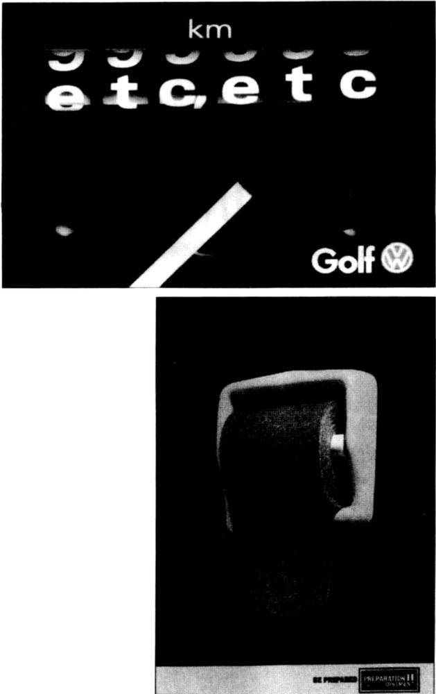

Study cues
- Write three promises for a drink you often buy, cut them down to one, and explain why.
- Find an ad and identify its main image, its promise and its audience. Do the three clash?
POP 廣告設計
Scope. A textbook on point-of-purchase (POP) advertising, from its definition and origins to its various forms. POP is advertising placed inside shops to help complete the final step of a purchase; it is not outdoor brand-image advertising.
Main ideas
- POP works through a set of media used together (counter, shelf, floor, shop window), not a single poster. It is called "the silent salesperson".
- Once supermarkets and self-service shopping appeared, products had to explain themselves to customers. POP grew up in this gap.
- The form must fit the point of sale: a small display for watches and an outdoor standee for drinks differ in size and viewing distance.
- The goal is still sales and brand impression. Atmosphere is a means, not an end.
Methods
- First write down the viewing conditions: how far away the customer stands, how many seconds they have, and whether they will pick it up. Then decide the size and type sizes.
- Check any POP set at three distances at least: walking past, you see the brand; stopping, you see the product name; picking it up, you see the price or how to use it.
- Look at it next to the packaging. POP should not create a new image that has nothing to do with the packaging.
- When making a mock-up, use a paper model at actual scale, place it next to a shelf and take a photo to check whether the text is still readable.
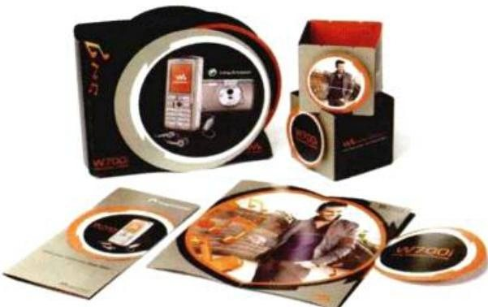
Study cues
- Why did POP become especially necessary only after supermarkets spread? Give an example from a shop you have visited.
- Design information for a chewing gum at three distances: three metres, one metre, and in the hand. Write one sentence for each.
智威湯遜手冊
Scope. A Chinese compilation of the internal methods of J. Walter Thompson. It is short, and covers strategic tools rather than layout techniques. Use it to understand how an agency turns "how consumers buy" into a brief.
Main ideas
- A campaign usually includes creative work, media and market research. Afterwards, sales and consumer research are used to evaluate whether it reached its goals.
- The "buying system" divides the thinking and actions of consumers before they make a decision into several stages. The stages differ from product to product.
- Advertising is only one part of the marketing mix. Promotions, public relations, displays and direct marketing may each be responsible for a particular stage.
- The value of the tools lies in pointing out needs the client has not yet stated clearly, not just in making an existing slogan look better.
Methods
- Draw six buying stages for a brand (from noticing to buying again), and in each box write what is happening now and what we want to push.
- In a brief, separate "where we are" from "where we want to go". Without the first, creative work turns into a matter of taste.
- When evaluating, look at both sales figures and whether consumers can repeat the promise. With only one of these, you cannot judge whether the ad worked.
Study cues
- Use the buying stages to analyse the last drink you bought: at which step were you persuaded?
- If sales rise but nobody remembers the ad, which marketing tool might be doing the work?
美國廣告設計實用教程
Original title: Advertising by Design: Creating Visual Communications with Graphic Impact
Scope. This textbook presents advertising as a complete process: inform, persuade, inspire desire, with a short history of advertising and case studies. It helps build a sense of process, that "an ad is more than a poster".
Main ideas
- The framework of Part One is inform, persuade, inspire desire. The order of the three changes with the product, but none can be left out.
- The book includes a short history of advertising and the "Creative Revolution", which moved advertising from simple hard selling to building brands with concepts and tone of voice.
- Some ads are driven by copy, others by the visual (the book uses dramatic public-health ads as examples). Decide first which one is the main engine.
- The cases note their period and typeface features, a reminder that visual styles belong to their time and cannot be applied casually to a brief from another era.
Methods
- Write a three-line script for an ad: what the reader learns, what they believe, what they want to do. The visual must serve these three lines.
- Decide whether the ad is copy-led or visual-led, then cut the other side down.
- When you borrow the type or photography of a particular era, state that you are borrowing "the tone of that era", rather than pretending it is neutral good looks.
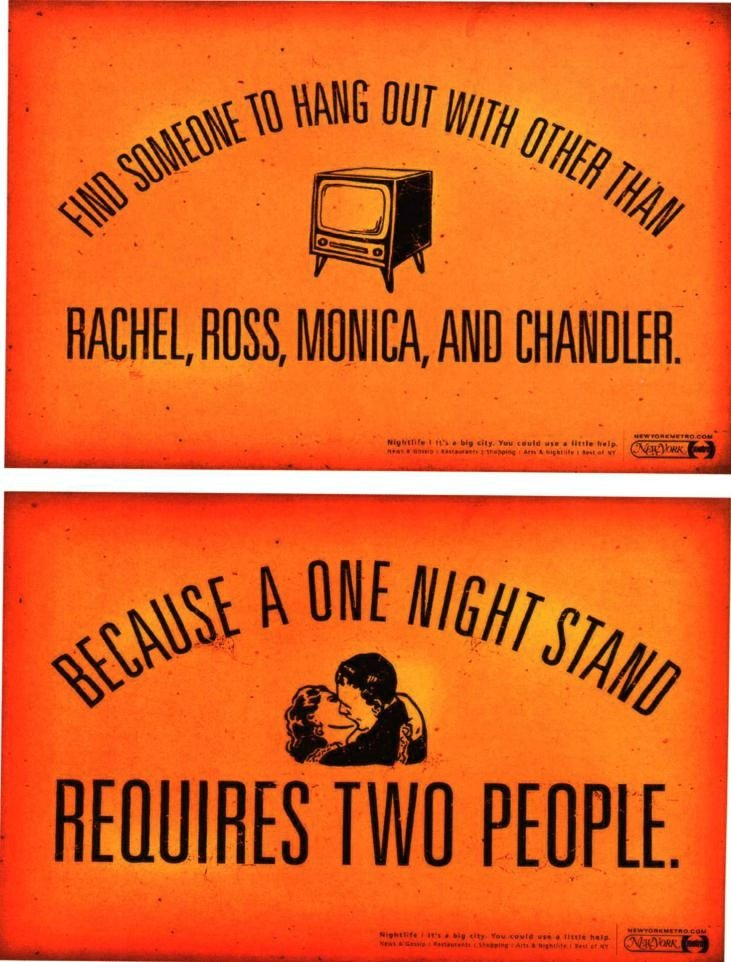
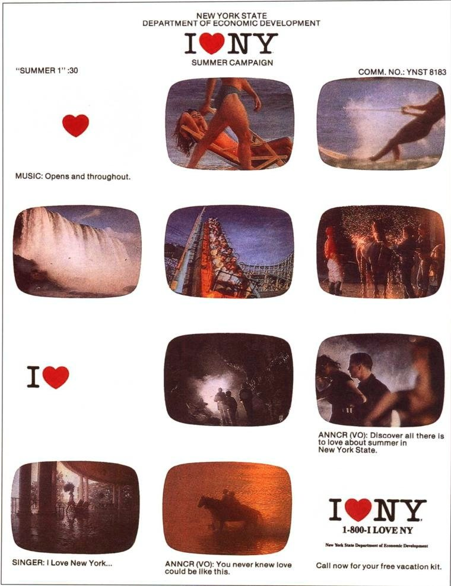
Study cues
- Break an ad you like into "inform, persuade, inspire desire". Which part is weakest?
- Is it copy-led or visual-led? If you swapped them, would the message fall apart?
廣告公司的秘密：平面設計師就業寶典
Scope. This book uses a day in an advertising agency to introduce print practice: calibrating monitors, scanning, halftone dots, inks, paper, and how to make single sheets and folded leaflets. It fills in "what happens after you hand over the file", not creative methods.
Main ideas
- Designers must be able to specify a job clearly on the job ticket: output screen ruling, proofing paper, ink colours, single- or double-sided, quantity.
- Fine printing often uses a higher screen ruling (the book mentions 175 or 200 lines), with dots so fine that the naked eye cannot easily separate them.
- Screens are RGB; print is CMYK. Calibration gives you a reliable sense of colour when adjusting it; it does not mean the colour on screen is the final result.
- A proof is a prediction, not the finished product. Double-sided proofs involve front-to-back registration, and the necessary steps cannot be skipped.
- Later chapters deal separately with single sheets, two-panel, three-panel and multi-panel folded leaflets, because the fold decides how the layout is divided.
Methods
- Before handing in, fill in your own job ticket: size, bleed, colour mode, whether fonts are converted to outlines, image resolution, folding method, special colours.
- Make a proof or laser print on the paper the printer will use, and check whether the back shows through and whether fold lines cut through text.
- Treat on-screen colour as a reference only. Check important brand colours against a swatch book or a printed sample from the last run.


Study cues
- Why can you not treat the colours you see on screen as the printed result?
- If a double-sided coupon is needed in such a small quantity that it is not worth putting on a press, what method does the book suggest for producing it?